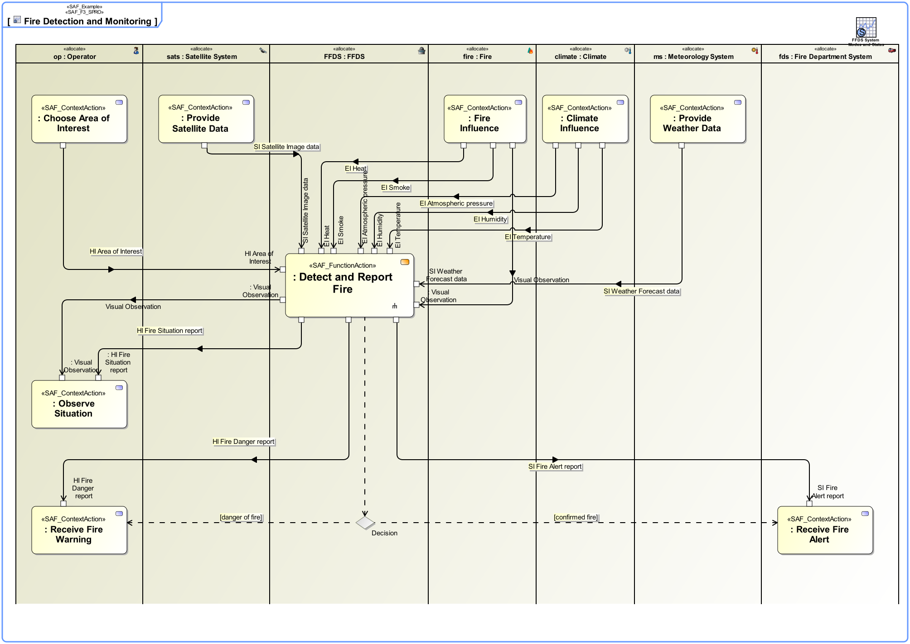

F3_SPRO System Process Viewpoint
| Domain | Aspect | Maturity |
|---|---|---|
| Functional | Process & Behavior |

The System Process Viewpoint provides the functional representation of the system using a black-box approach
The System Process Viewpoint supports the “System Requirements Definition Process” activities of the INCOSE SYSTEMS ENGINEERING HANDBOOK 2015 [§4.3] and contributes to the System Function, and the System Interface definition.
An activity diagram featuring the ordered execution of System Process Actions. The activity diagram swim lanes are typed with Context Element usage and SOI usage from the same System Context. Note: In order to improve the clarity of presentation it may be appropriate to use several activity diagrams for one System Process.
A tabular format listing all identified System Functions, the System Processes in which they appear, and the Comtext Exchange with the Context Functions.
The following Stereotypes / Model Elements are used in the Viewpoint: